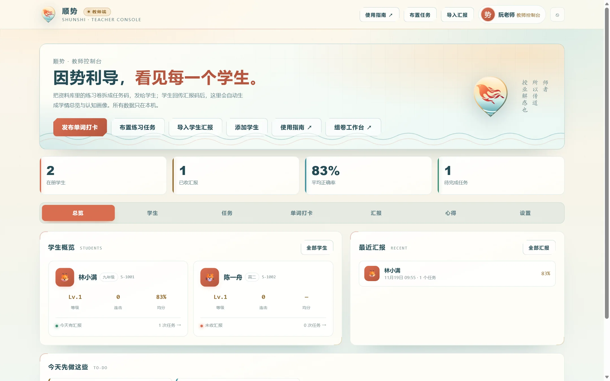
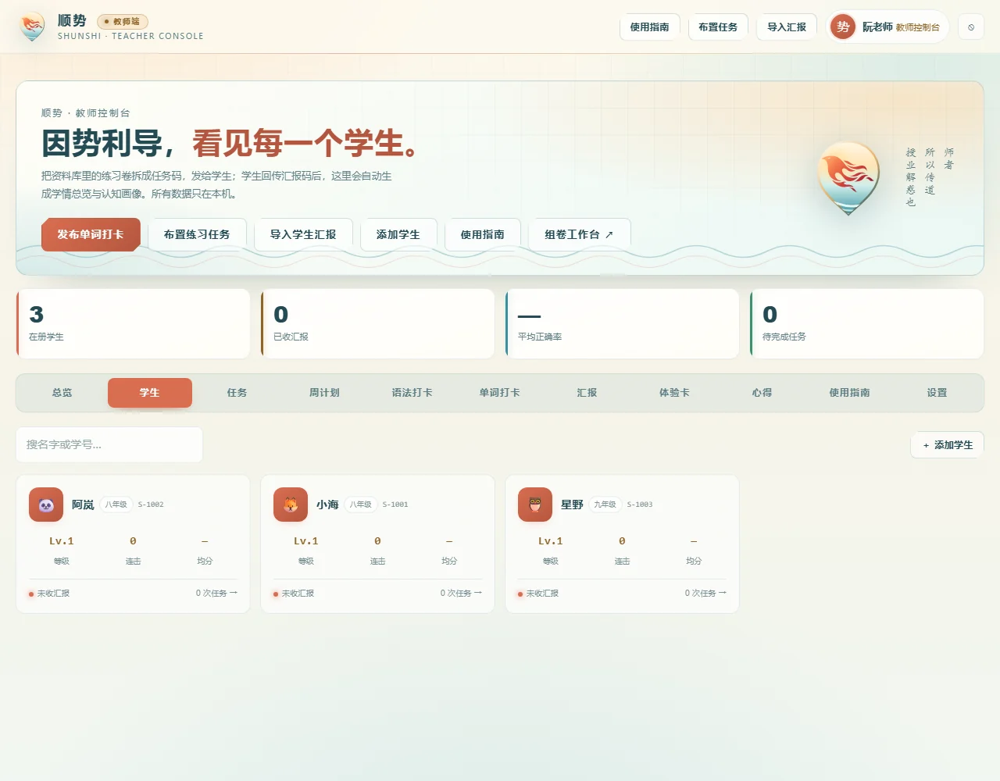
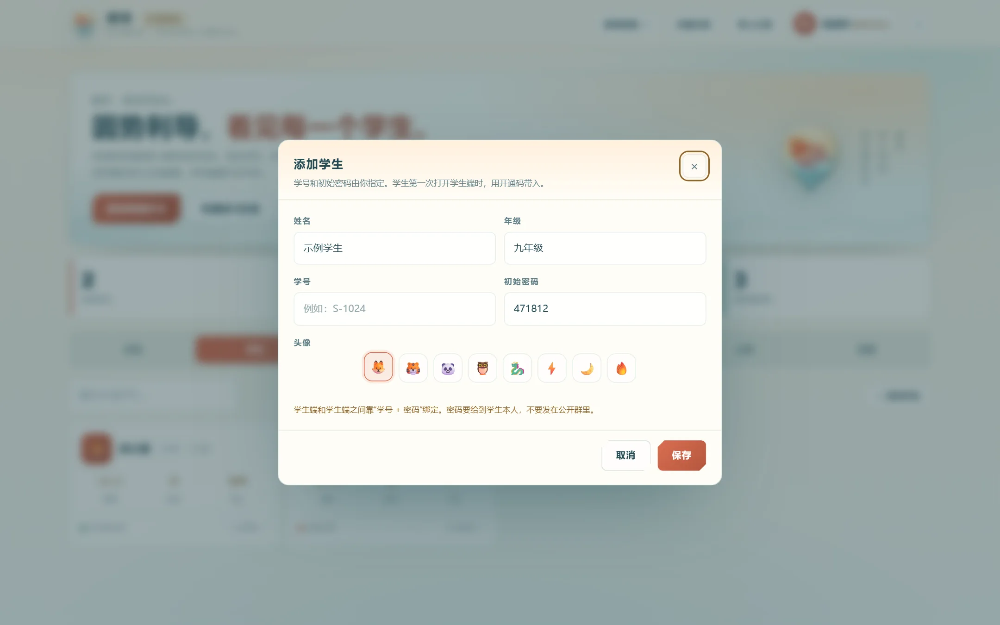
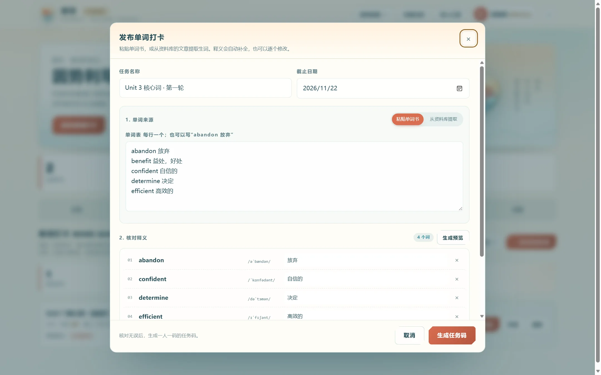
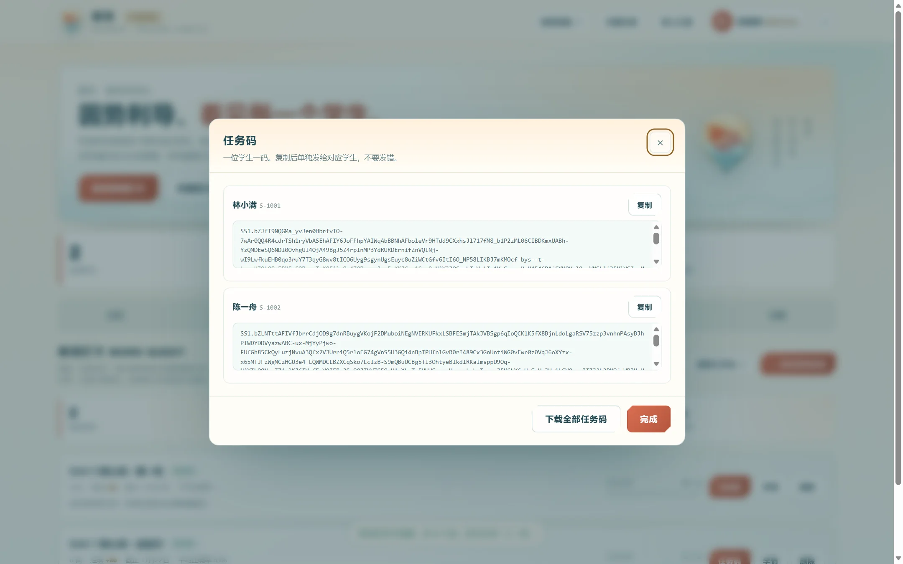
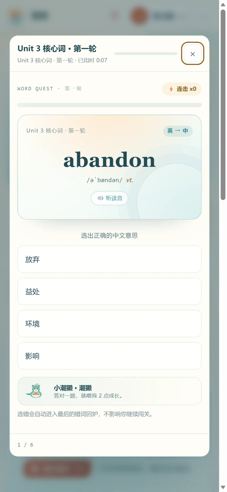
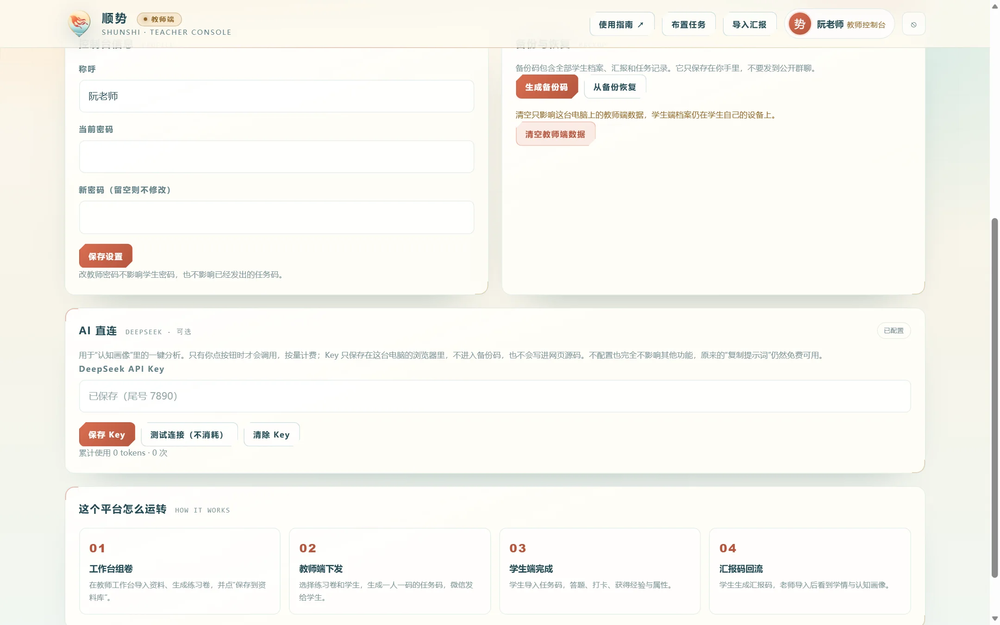
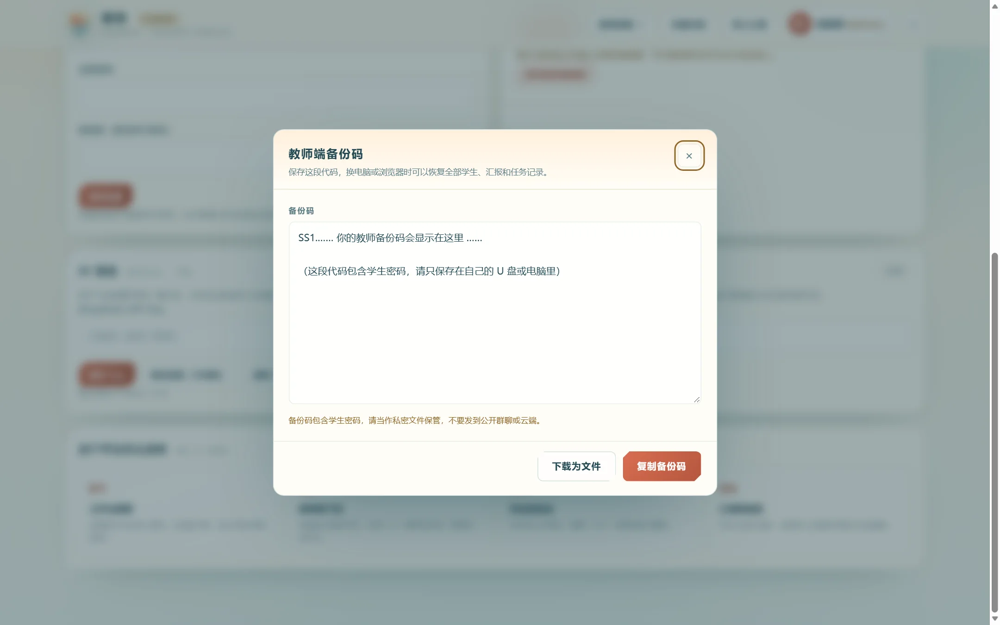

GET ORIENTED
先认清四个入口
顺势不是四个孤立的网页，而是一条闭环。你只需要记住：在哪里发，在哪里看，学生在哪里做。
展示窗口。家长、访客看介绍和公开的学习心得。
index.html你的办公桌。学生、任务、单词打卡、汇报、画像都在这里。
teacher.html学生输入密码后打卡、答题、养小潮獭、生成汇报码。
student.html把阅读、完形、试卷整理成练习卷；也能从文章里提取生词。
library.html
先记住这条底线：四个页面共用同一个浏览器的本地存储。换浏览器、清理浏览器数据、换电脑，都会看不到旧数据。所以每周做一次备份，备份文件放到 U 盘（见第 07 节）。
FIRST SETUP
建第一个学生
老师先建档案，学生才能用“学号 + 密码”进入。第一次使用教师端，系统会让你先设一个教师密码。
- 打开教师端，设教师密码。第一次进入时填称呼和密码；密码用 6–16 位字母或数字。这个密码只给老师，学生不需要知道。
- 点“学生”→“＋ 添加学生”。填姓名、年级、学号、初始密码。学号建议用
S-1001这种格式；初始密码用 4–12 位字母或数字，发给学生本人。 - 保存后，点学生卡片 →“生成开通码”。把 开通码 + 学号 + 初始密码 三样一起单独发给学生。学生第一次打开学生端时，粘贴开通码就能自动带入姓名和密码。


开通码和密码不要发班级群。一个学生一份，单独发给本人或家长。密码是学生档案的钥匙，公开后别人也能导入他的任务。
小技巧：学号里不要写真实姓名，用 S-1001、S-1002 就行。这样截图、备份码里都不会出现学生全名。
ASSIGN WORDS
发一次单词打卡
这是最常用的一条路：把单词书粘进来，核对释义，勾选学生，生成一人一码。
- 教师端点“发布单词打卡”。在总览页的红色按钮、顶部“布置任务”，或“单词打卡”页右上角都能进入。
- 填任务名和截止日期。任务名写清楚，例如“Unit 3 核心词 · 第一轮”；截止日期可以留空。
- 粘贴单词书。每行一个单词；也可以写
abandon 放弃这样带中文。想从文章里提取生词，就切到“从资料库提取”，选一篇保存过的阅读。 - 点“生成预览”，核对音标和中文。本机释义库有 4 万多词条，会自动补全；不想要的词点右边的 × 删掉。
- 勾选学生，设置完成经验。默认 80 经验；一次发给多个学生也可以，系统会为每个人生成不同的任务码。
- 点“生成任务码”。复制或“下载全部任务码”，把每个学生对应的那一份单独发给他。任务码很长是正常的，它是压缩后的整包单词，不要手动改。


至少 4 个词才能生成选项。词太少，四选一凑不齐干扰项。一次 6–20 个词比较适合日常打卡；太多可以拆成两轮。
想从阅读里考生词？先到组卷工作台把文章“保存到资料库”，再回单词打卡选“从资料库提取”。系统会跳过常见虚词，最多取 40 个。
STUDENT SIDE
学生怎么打卡，小潮獭怎么长大
学生端把单词做成四选一闯关。答对就喂宠物，答错自动回炉。学习行为变成看得见的成长值，不靠抽卡，也不排名。
- 学生打开学生端，输入密码。第一次用老师发的开通码建档；以后直接输密码进入。
- 首页先看到“小潮獭”宠物卡。再往下是任务列表；点任务卡开始这一轮。
- 英译中四选一。答对一题，小潮獭立刻 +2 成长；答错会显示正确意思，这个词会自动进入最后的“错词回炉”。
- 做完点“提交任务”。系统结算经验、成长值和小鱼干；正确率越高，小鱼干越多。
- 回首页点“生成汇报码”。复制发给老师。老师导入后，才能看到这次打卡的完成情况和错词。


四个成长阶段 EVOLUTION
成长值和小鱼干从哪来 REWARDS
| 动作 | 成长值 | 小鱼干 |
|---|---|---|
| 答对一题 | +2 | — |
| 完成一轮单词打卡 | +8 起（按本轮经验 × 60% 结算，保底 8） | 每 5 个词 1 条，保底 1 条 |
| 正确率达到 90% | — | 额外 +1 条 |
| 喂一条小鱼干 | +8 | −1 条 |
为什么完成一轮后成长值才跳一大截？答题时的 +2 是“即时反馈”；完成奖励在点“提交任务”时结算。这样学生不会为了刷成长值乱点选项。
宠物不是抽卡游戏。没有付费、没有随机、没有排行榜。它只奖励三件事：答对、坚持完成、把错词重新练会。老师端不需要管理宠物，也不用发宠物奖励。
REPORT BACK
把学习痕迹收回来
学生做完任务，生成一段汇报码。老师导入后，统计、五维雷达、认知画像和任务历史会自动更新。
- 学生发来汇报码。在任务完成页或首页点“生成汇报码”，复制整段。
- 教师端点顶部“导入汇报”。也可以到“汇报”页点“＋ 导入汇报”。
- 整段粘贴，点“校验并导入”。系统会用这个学生的密码校验；不是他的码，导不进来。
- 打开学生卡片看结果。“学习画像”看统计和雷达，“任务历史”看每次答题，“汇报记录”看成长曲线。

汇报码也是学生的备份。学生换手机时，用“恢复档案”粘贴最近的汇报码 + 原密码，就能把等级、徽章、错题找回来。所以每次做完任务，都建议生成一份。
一个学生的码只能给一个学生用。汇报码里带学号和密码校验；把 A 的码导给 B，会提示密码不对。这样才能保证画像不被混在一起。
OPTIONAL AI
AI 分析：两条路线，按需选
AI 只是辅助，不是必需品。不配置也完全不影响发任务、打卡、看画像。想省额度，就用免费路线；想省时间，再直连 DeepSeek。
学生详情 →“复制分析提示词”→ 打开豆包 / DeepSeek 网页版 → 粘贴发送 → 把回复粘回“AI 分析”框 → 保存。不花 API 额度，适合偶尔分析。
设置 →“AI 直连”→ 粘贴 DeepSeek Key → 保存 → 学生详情 →“一键分析”。每次点击前都会确认，按量计费。
配置直连 SETUP
- 到“设置 → AI 直连”。把 DeepSeek 的 API Key 粘贴进输入框，点“保存 Key”。Key 只保存在这台电脑的浏览器里。
- 点“测试连接（不消耗）”。它只查模型列表，不产生生成费用；成功后会显示可用模型。
- 打开一个学生 →“一键分析”。确认后才会发送匿名学习数据；结果会填进文本框。
- 核对内容，点“保存 AI 分析”。不点保存，结果不会写进学生档案。

额度是怎么省的 COST
| 项目 | 当前做法 |
|---|---|
| 单次实测 | 约 960 tokens（输入 562 / 输出 398），按 DeepSeek 账单计费 |
| 思考模式 | 已关闭，额度留给正文，不花在推理过程上 |
| 输出上限 | 700 tokens，提示词要求 550 字以内、只写四部分 |
| 输入范围 | 只带最近 6 个任务、8 道错题；学生姓名和备注里的姓名会隐去 |
| 调用时机 | 只有你点“一键分析”并确认后才调用；不会后台自动跑 |
Key 只存本机。它不会进入教师备份码，也不会写进网页源码。不要把 Key 截图发群；如果怀疑泄露，去 DeepSeek 后台删除旧 Key，重新建一个，再回来保存。
最省钱的用法：平时用免费路线；只有赶时间、或需要批量看几个学生时，再用直连。一个学生一学期分析 2–3 次就够了，不需要每次打卡都分析。
BACKUP & USB
备份到“顺势ENGLISH”U 盘
浏览器数据会因清理缓存、换电脑而消失。每周花两分钟，把教师备份码下载到 U 盘，就能把整间教室带走。
- 教师端 →“设置”→“备份与恢复”。点“教师端备份”，系统会生成一段备份码。
- 点“下载为文件”。文件名类似
顺势教师端备份-2026-11-19.txt。这段代码包含学生、任务、汇报和设置。 - 把文件复制到 U 盘。打开“此电脑”→ 名为 顺势ENGLISH 的 U 盘 →
顺势工作台→资料备份。不要只放在桌面，桌面默认在 C 盘。 - 换电脑时恢复。在新电脑打开教师端登录页 →“从备份恢复”→ 粘贴备份码 + 备份时的教师密码。

每周备份清单 WEEKLY
- 周五下课后，导出一次教师端备份码，下载为文件。
- 文件复制到 U 盘
顺势工作台 / 资料备份，按日期命名。 - 抽查一个学生：打开备份文件，确认能看到学生名单和最近任务。
- 换电脑、换浏览器、清理缓存之前，再备份一次。
- 学生端的汇报码也建议留存，尤其是换手机之前。
备份码包含学生密码，是私密文件。不要发到公开群、朋友圈或网盘公开链接。U 盘丢了，相当于学生档案丢了；建议给 U 盘贴个标签，放在固定位置。
为什么放 U 盘？这台电脑的 C 盘空间有限，系统盘塞满会卡顿。U 盘有 200 多 G，专门放备份、源码副本和下载资料，C 盘只留正在运行的网页。
TROUBLESHOOTING
常见问题
先在这里找；找不到再去教师端“设置”里看平台说明。下面的答案都按“数据只在本机”这个前提写。
忘记教师密码了怎么办？
用教师端登录页的“从备份恢复”，粘贴备份码，再输入备份时的教师密码。如果连备份和密码都没有，本机数据无法解密，只能重建控制台。建议把教师密码和备份文件分开保管，但都要在自己的 U 盘里。
学生忘记密码了怎么办？
教师端 → 学生 → 点学生卡片 →“编辑”，重设初始密码并保存。改密码后，之前发出去的任务码会失效，重新生成一份即可。学生本机如果还留着旧档案，需要用旧汇报码 + 旧密码恢复，或重设档案。
任务码提示无效 / 打不开？
先确认三件事：① 复制的是完整一整段，没有漏字符；② 这是发给这个学生的码，不是别人的；③ 学生输入的学号和密码与教师端一致。任务码很长是正常的，不要手动编辑。
换手机或换电脑，数据还在吗？
不在原来的浏览器里。教师端用“教师备份码”恢复；学生端用最近的“汇报码”+ 原密码恢复。网页本身不存云端，所以“备份”就是唯一的搬家方式。
数据会上传到服务器吗？
不会。学生、成绩、任务、备注都只保存在这台电脑的浏览器里。只有你主动点“一键分析”时，匿名的学习数据才会发送给 DeepSeek；不点就不发送。公开的学习心得是你手动选择发布的，和私人档案分开。
家长能看到教师端吗？
看不到。教师端需要教师密码；家长和学生只看学生端。学生端只显示自己的任务、等级、宠物和汇报码，不显示其他学生。
宠物数据会丢吗？
宠物成长值跟学生档案一起存在本机。清理浏览器数据会丢；学生换手机时，用汇报码恢复档案，宠物也会一起回来。教师端不需要单独备份宠物。
能装到手机桌面吗？
可以。用手机浏览器打开学生端，点浏览器菜单里的“添加到主屏幕”，就会像一个 App 一样出现。它仍然是网页，数据存在这台手机的浏览器里，换手机要恢复档案。
为什么不做微信小程序？
个人主体的小程序不能用 web-view 打开外部网页，也不能绑定未备案的域名。要上小程序，需要企业/组织主体、已备案的 HTTPS 域名和服务器，成本和维护都更高。现在的网页版可以先“添加到主屏幕”，体验接近 App。
API Key 安全吗？会不会进备份？
Key 只存在这台电脑浏览器的 localStorage 里，不写进网页源码，也不进入教师备份码。换电脑后需要重新粘贴一次。怀疑泄露时，去 DeepSeek 后台删除旧 Key，重建一个。
一次 AI 分析大概花多少？
当前实测约 960 tokens（输入 562 / 输出 398）。具体金额按 DeepSeek 当时的计费标准算；因为关闭了思考模式、限制了输出长度，已经比默认调用省很多。每次点击前都会弹确认，不会偷偷扣额度。
截图里的学生是真的吗？
不是。指南里的姓名、学号、分数都是演示数据，用来展示界面。真实学生信息只在你的教师端和备份文件里。